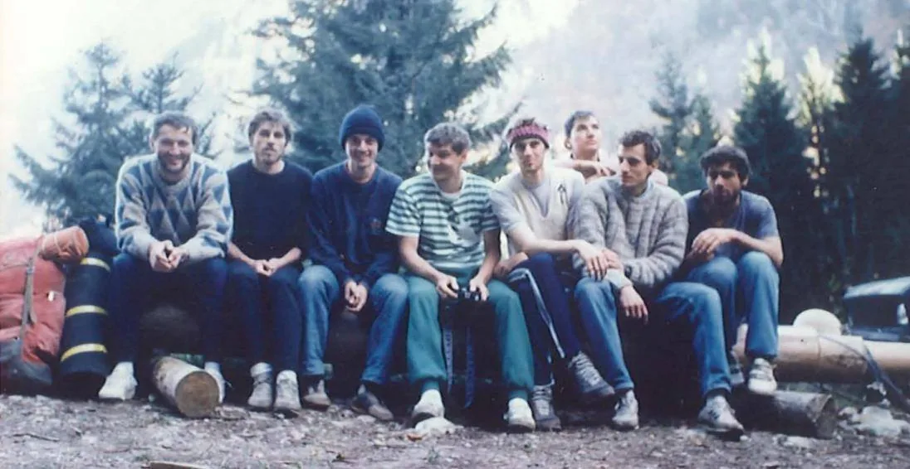

1991.-2000.
Unatoč ratu, SO Velebit nastavio je sa održavanjem speleoloških škola. Izostali su redovni posjeti poznatim speleološkim lokacijama na Kordunu, ali su zato zamjenske lokacije u Samoborskom gorju, Žumberku, Gorskom…

21. Zagrebačka speleološka škola
13.3.-24.4.1991.
Voditelj: ZORAN STIPETIĆ
Polaznici (24, završilo 22):
Darijo Šarotar, Irina Stipanović, Ana Alar, Ana Čop, Tvrtko Pajalić, Lovro Hrust, Lidija Vrečar, Sanja Car, Mirela Rafolt, Nikica Jelušić, Pavle Mintas, Vida Ungar, Zrinka Kitonić, Marko Ružić, Tina i Nela Bosner, Lober Đaković, Nives Janošević, Zdenko Batur, Sabin Smlatić, Mirna Ribarović i Eden Mišljenac
Instruktori: Zoran Stipetić, Siniša Rešetar, Darko Troha, Dubravko Kavčić, Vladimir Matek, Teo Barišić, Aida Barišić, Čedo Josipović, Jurica Sekelj, Gordan Tomšić, Marijan Tortić, Darko Cucančić, Slaven Dobrović, Damir Lacković, Robert Erhardt, Ana Sutlović, Miron Kovačić, Dubravko Šamec, …
22. Zagrebačka speleološka škola
8.4.-20.5. 1992.
Voditelj: SLAVEN DOBROVIĆ
Polaznici (24, završilo 23):
Radoslav Kraljević, Sunčica Hrašćanec, Darko Škurla, Hrvoje Račić, Ivica Tomljenović, Marinko Bronzović, Darko Bakšić, Branimir Rajšel, Tamara Holjevac, Josip Grgurić, Zvonimir Lubina, Hrvoje Bračika, Filip Pintarić, Tanja Bizjak, Danijela Hamidović, Danijela Čepelak, Nebojša Topolšćak, Mislav Bošnjak, Irena Pavičić, Vedran Vračar, Robert Verem i Martina Tončić
Instruktori: Slaven Dobrović, Ana Sutlović, Darko Cucančić, Damir Lacković, Dubravko Šamec, Čedo Josipović, Darko Troha, Robert Erhardt, Dubravko Kavčić, Vida Ungar, Siniša Rešetar, Neven Kalac, Marijan Tortić, Pavle Mintas, Jagoda Munić, Zoran Stipetić,
23. Zagrebačka speleološka škola
24.3.-2.5.1993.
Voditelj: DARKO TROHA
Polaznici (42, završilo 33):
Ida Šintić, Ana Predović, Iva Kolar, Neven A. … (nedostaju podaci)
Instruktori: Darko Troha, Zoran Stipetić, Dubravko Kavčić, Damir Lacković, Ana Sutlović, Slaven Dobrović, Neven Kalac, Darko Bakšić, Marijan Tortić, Darko Cucančić, Jagoda Munić, Siniša Rešetar, Gordan Tomšić, Čedo Josipović, Vida Ungar, Sunčica Hrašćanec, …
24. Zagrebačka speleološka škola
16.3.-27.4.1994.
Voditelj: DUBRAVKO KAVČIĆ
Polaznici (24, završilo 22):
Ivica Radić, Marko Grgin, Pavle Jureta, Melita Kišasondi, Pero Sedlar, Zrinka Rade, Maja Mirt, Darko Štefanac, Mislav Vedriš, Luka Šešo, Marko Zečević, Drago Marković, Željka Županić, Predrag Mihovilović, Ida Srdić, Marko Andreis, Željko Pereuško, Tatjana Milovac, Alen Hajnal, Ana Kolumbić, Jasminka Vicenski i Željko Glogoški,
Instruktori: Dubravko Kavčić, Damir Lacković, Ana Sutlović, Vida Ungar, Miron Kovačić, Vesna Ogrizović, Vedran Vračar, Gordan Tomšić, Hrvoje Malinar, Darko Troha, Čedo Josipović, Darko Bakšić, Jagoda Munić, Siniša Rešetar, Ana Čop, Darko Cucančić, Tanja Bizjak, Sunčica Hraščanec, Neven Andrijašević, Jurica Sekelj, …
25. Zagrebačka speleološka škola
22.3.-3.5.1995.
Voditelj: SINIŠA REŠETAR
Polaznici (25, završilo 16):
SOV: Neven Borojević, Irena Blažinčić, Luka Krušlin, Ljiljana Novosel, Igor Gabrić, Dražen Živalj, Tomislav Marić, Marin Žužul, Ana Viller, Albert Stošić, Dubravka Topolnjak, Željeko Hrastinski, Davor Jelinić i Ivana Pranjić
SOŽ: Željko Jelenić i Danijel Mendeš
Instruktori: Siniša Rešetar, Miron Kovačić, Dubravko Kavčić, Ana Sutlović, Darko Bakšić, Gordan Tomšić, Neven Andrijašević, Damir Lacković, Ana Čop, Darko Troha, Suzana Štiglić, Zoran Stipetić, Mladen Plemčić, Andrej Stroj, Marko Andreis, Danijela Hamidović, Tanja Bizjak, Čedo Josipović, Trpimir Vedriš, Mislav Vedriš, Davor Perić, Melita Kišasondi…
26. Zagrebačka speleološka škola
20.3.-8.5.1996.
Voditelj: GORDAN TOMŠIĆ
Polaznici (18, završilo 18):
Pavlica Bajsić, Maja Bakić, Ivona Barišić, Tanja Bosak, Dean Bratušek, Tihana Dasović, Tatjana Galić, Sanja Gottstein, Nives Hlubna, Amalija Kozjan, Petar Petrović, Livio Plavec, Vladimir Puljko, Iskra Pusić, Ana Katarina Sansević, Zrinka Sisek, Leonara Smirnjak i Davor Vuletić
Instruktori: Gordan Tomšić, Tanja Bizjak, Marko Andreis, Miron Kovačić, Andrej Stroj, Trpimir Vedriš, Jagoda Munić, Siniša Rešetar, Ana Sutlović, Darko Bakšić, Darko Štefanac, Željko Hrastinski, Darko Troha, Sunčica Hraščanec, Teo Barišić, Aida Barišić, Ivica Radić, Vedran Šimunović, Lovro Hrust, Davor Perić, Ana Predović, Melita Kišasondi, …
27. Zagrebačka speleološka škola
19.3.-7.5.1997.
Voditelj: DARKO BAKŠIĆ
Polaznici (22, završilo 16):
SOV: Danijel Barković, Tomica Cesnik, Tijana Cukerić, Mario Čmarec, Darija Foretić, Ivana Gregorić, Nataša Josipović, Jelena Koljatić, Tomo Krajina, Mislav Marohnić, Maja Miličić, Mlade Novosel, Zdravko Scheibl i Ronald Železnjak
SOŽ: Vedran Jalžić i Ana Silić
Instruktori: Darko Bakšić, Siniša Rešetar, Gordan Tomšić, Tanja Bizjak, Ljiljana Novosel, Čedo Josipović, Darko Troha, Vesna Ogrizović, Jagoda Munić, Ivica Radić, Andrej Stroj, Neven Kalac, Sunčica Hraščanec, Ana Sutlović, Marko Andreis, Dubravko Kavčić, Marijan Tortić, Darko Cucančić, Dean Bratušek, Damir Lacković, Maja Bakić, Željko Hrastinski, Ana Katarina Sansević, Maja Bakić, Tihana Dasović, …
28. Zagrebačka speleološka škola
11.3.-29.4.1998.
Voditeljica: TANJA BIZJAK
Polaznici (24, završilo 24):
Filip Bach, Denis Balažić, Goran Bakšić, Davor Brkić, Maja Ciglar, Zoran Golec, Goran Gregurović, Tomislav Hrust, Jasminka Husandžić, Marija Jerković, Željka Karauš, Hrvoje Knežević, Ana Kolak, Gordan Muktić, Dženaba Odabašić, Dalibor Paar, Martina Pekšec, Erli Kovačević, Helena Lebo, Vlatka Marić, Ivančica Milković, Hrvoje Sisak, Marina Skurić-Prodanović i Goran Vincenc
Instruktori: Tanja Bizjak, Darko Bakšić, Marko Andreis, Dean Bratušek, Ana Katarina Sansević, Tihana Dasović, Ana Sutlović, Leonara Smirnjak, Jagoda Munić, Čedo Josipović, Liljana i Mladen Novosel, Vesna Ogrizović, Nataša Josipović, Siniša Rešetar, Damir Lacković, Ivančica Zovko, Dubravko Kavčić, Tomislav Marić, Ivana Gregorić, Ana Čop, …
29. Zagrebačka speleološka škola
7.4.-8.5.1999.
Voditeljica: SUNČICA HRAŠĆANEC
Polaznici (22, završilo 20):
Ivo Kleflin, Davor Maričić, Jurica Mustač, Ivan Simeunović, Hrvoje Matejčić, Irena Vusić, Ana Markić, Edita Vrdoljak, Petra Španiček, Vanja Došen, Anita pl. Kiszasondy, Ivica Ćukušić, Vanja Kovačević, Igor Đerd, Saša Iljić, Kristina Krklec, Sanda Markler, Kristijan Kovačević, Jana Bedek, Marija Gudelj, Jelena Grlić, Filip Filipović
Instruktori: Sunčica Hrašćanec, *Ana Katarina Sančević, Tanja Bizjak, Ana Bakšić, Darko Bakšić, Ana Čop, Andrej Stroj, Dalibor Paar, Dean Bratušek, Jagoda Munić, Marko Andreis, Gordan Tomšić, Darko Troha, Damir Lacković, Neven Kalac, …
*(imena iz tablice aktivnosti članova)
30. Zagrebačka speleološka škola
22.3.-3.5.2000.
Voditeljica: JAGODA MUNIĆ
Polaznici (21, završilo 19):
Ozren Hadžiagić Leljak, Rino Balić, Sandro
Dujmović, Darko Henc, Irena Jevtov, Ana Katalinić, Tommy Kolman, Daniel Lacko, Danijel Limenko, Siniša Mihalić, Ivica Molnar, Krešimir Motočić, Nikolina Zrinski, Sunčica Domazet, Vedran Nikolić, Vlatka Orhanović, Josip Petričević, Nikolina Radunić, Maja Žuvela, Nina Koceić, Zrinka Lončar
Instruktori: Jagoda Munić, Ana Bakšić, Vlado Božić, Marko Andreis, Dalibor Paar, Želimir Ludvig, Ronald Železnjak, Ana Katarina Sansević, Dean Bratušek, Neven Kalac, Darko Bakšić, Sunčica Hrašćanec, Darko Troha, Hrvoje Malinar, Damir Lacković, Siniša Rešetar, Dubravko Štefanec, Gordan Tomšić, Tanja Bizjak, Čedo Josipović, Filip Filipović, Andrej Stroj, Ana Čop, Leonara Smirnjak, Martina Pekčec, Vesna Ogrizović, Helena Lebo, Kristina Krklec …
Neki od dotadašnjih voditelja škola, slijeva na desno: Robert Erhardt, Damir Lacković, Dario Denteš, Zvonko Šporšić, Darko Troha, Ana Sutlović, Slaven Dobrović i Čedo Josipović, 1990. Austria, Batman Hohle .
Voditeljice škola; Ivančica Zovko, Tanja Bizjak, Sunčica Hrašćanec i Ana Bakšić (Foto: Vlado Božić, Lukina jama 1994.)